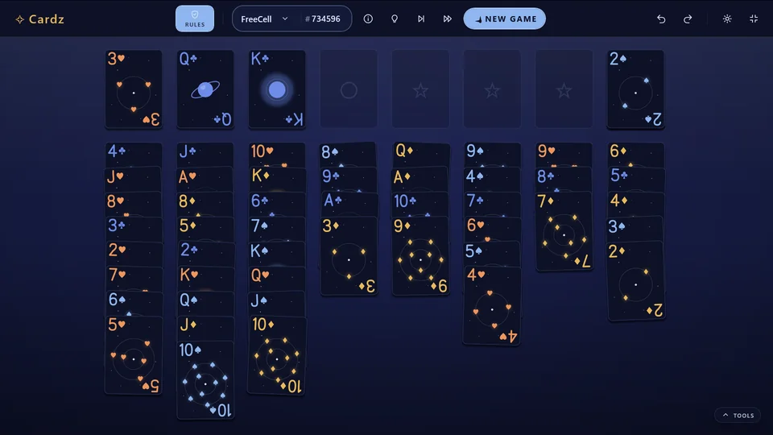
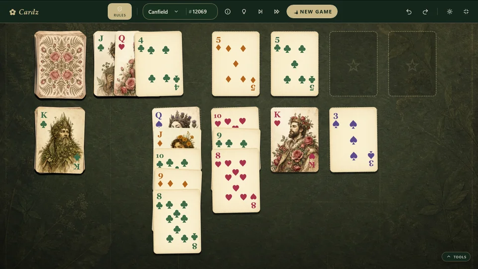
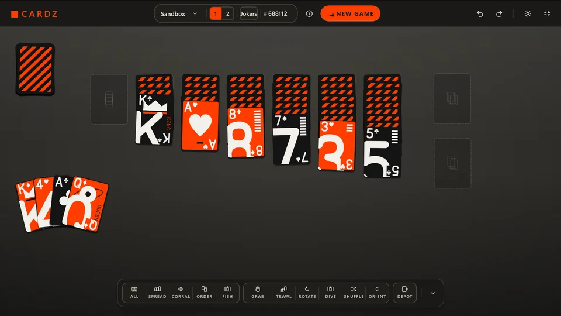

Toutes les commandes
Au doigt, au stylet, à la souris ou au clavier.
Le solitaire pour Windows
Jouez les classiques dans les règles, désactivez les règles quand l'envie vous prend, ou partez d'un jeu de cartes nu et inventez votre propre jeu.

Jeux

Des paires qui font treize
Jeu Scarab
Toutes les cartes à découvert
Jeu Deepfield
Déplacez des queues entières d'un coup
Jeu Filigree
Dix-huit éventails, deux redistributions
Jeu Olympus
La première carte donne le ton
Jeu Herbarium
Défaites le tissage
Jeu ValhallaCartes
Changez quand vous voulez, même en pleine partie.
Sandbox
Une table et un jeu de cartes. Posez les cartes où vous voulez et inventez un jeu au fil de la partie.

Au doigt, au stylet, à la souris ou au clavier.
Fermez l'application. La partie est toujours là quand vous revenez.
Bloqué ? Demandez un indice. Ou désactivez les règles et déplacez n'importe quelle carte.
Contraste élevé, un jeu de cartes adapté au daltonisme, mouvement réduit, narration pour lecteur d'écran et jeu entièrement au clavier.